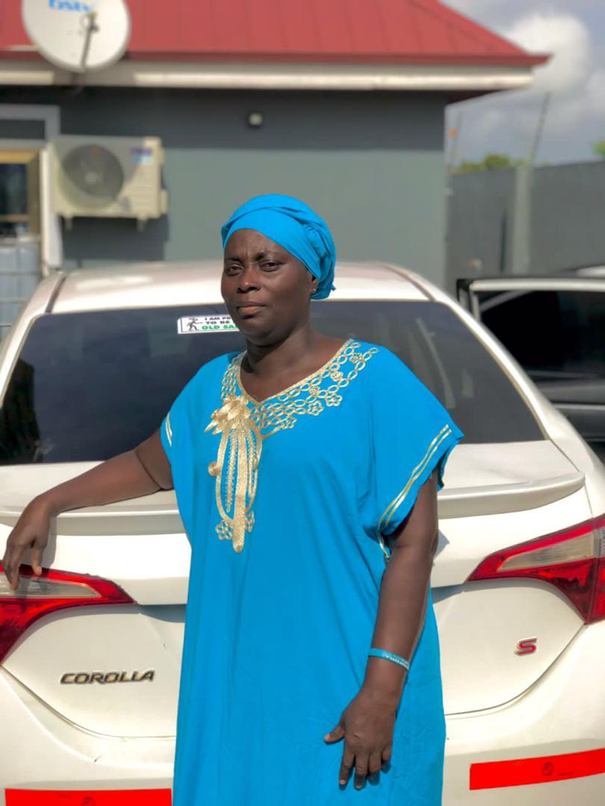

Tribute to Our beloved sister who we used to call Nana
To our dear sister, Regina Egyir,
As we gather to celebrate your life, we find ourselves reflecting on the incredible bond we shared. You were not just our sister; you were our acquaintance, our cheerleader, and our inspiration.
We remember the adventures we had together—the late-night talks where we shared our dreams, the silly inside jokes that made us laugh until we cried, and the countless family gatherings where your radiant smile lit up the room. One of our most cherished memories is celebrating Mom’s birthday last year. The joy in the air was palpable as we all gathered around the table, sharing laughter and stories. It was a beautiful celebration, made even more special by the fact that you were with us, reminding us how precious these moments are. Your presence that day filled our hearts with gratitude and hope, and we celebrated not just Mom’s life but also the miracle of having you with us.
Your strength and determination were evident throughout your life. Even during the toughest days, you faced each challenge with a smile and a resolve that taught us all the true meaning of resilience. You showed us how to find joy in the little things, and your laughter will forever echo in our hearts.
Though we are heartbroken by your absence, we carry your spirit with us. You have left an indelible mark on our hearts, and we promise to honor your memory by living life fully, just as you did.
We will always remember the courageous way you battled your illness, inspiring us with your grace and strength even when times were difficult. Thank you for being the best sister we could have ever asked for. We love you dearly and will hold you in our hearts forever.
Da Yie Onuapa
>

To my most cherished daughter,
As I gather my thoughts to honor you, I am overwhelmed by the love and light you brought into my life. For over two long years, you fought a courageous battle against your illness, displaying strength and grace that inspired everyone around you.
From the moment you entered my life, where the sun always seemed to shine a little brighter, you filled my heart with joy. I still remember that beautiful day when you were born, surrounded by the warmth of family and the vibrant colors of the blooming flowers in the park. Your first cries filled my heart with happiness, and I knew then that you were destined to bring joy to everyone you met.
Your laughter was contagious, and your spirit was unbreakable. Even in the darkest moments of your struggle, you radiated hope and positivity, reminding us all of the beauty of life.
You taught me the true meaning of resilience. Your determination to embrace each day, despite the challenges you faced, was a powerful testament to your character. You fought not only for yourself but also for those you loved, always putting others before you.
I fondly remember how you would always gist me about things I didn’t know, sharing your insights and experiences that made me see the world differently. We often found ourselves planning how to make money, brainstorming ideas and dreaming big together. Those moments were filled with laughter and hope for the future.
I also recall how you would get upset each time I left for Takoradi for too long, expressing how much you missed my company. Your love and concern always made me feel valued and cherished.
I remember those long days at Korle Bu Hospital, where I would walk to and fro to get your prescribed medicines. It was during one of those moments that I tragically fell from the staircase, a painful reminder of how fragile life can be.
I cherish the countless memories we created together—family outings, quiet moments at home, and your infectious smile that could light up any room. Your spirit will forever live on in my heart, guiding me through the pain of your absence.
As I celebrate your life, I find comfort in knowing that your legacy of love and courage will continue to inspire me and everyone who knew you. Though you are no longer with us, your memory will always be a source of strength and love.
Damirifa Due
Da Yie Meba
Tribute to My Mommy
Nana, you were my safe haven, the one I ran to every time Aunty Keziah threatened to scold me. I can still hear your comforting voice, always ready to ease my worries. I remember the day you thought I had gone missing. I had snuck into a neighbor’s room and kept quiet for so long that you walked miles searching for me, convinced I was lost. When you finally found me, you said, “If you hadn’t come back, nobody would have eaten in this house today!” Your love and concern always made me feel valued and cherished.
I also remember our outings together. Every time we stepped out, I would spot something I wanted to buy, and you would sigh and playfully complain, “Why do you always want to buy everything you see?” Your humor made those moments special, turning simple errands into cherished memories filled with laughter.
Your sense of humor was infectious. You had an uncanny ability to make everyone laugh, even in tough times. I’ll never forget how you would crack jokes at the dinner table, lightening the mood and bringing us all together.
Thank you, Nana, for your endless love, your warmth, and your laughter. You will forever hold a special place in my heart.
Da Yie Nana!